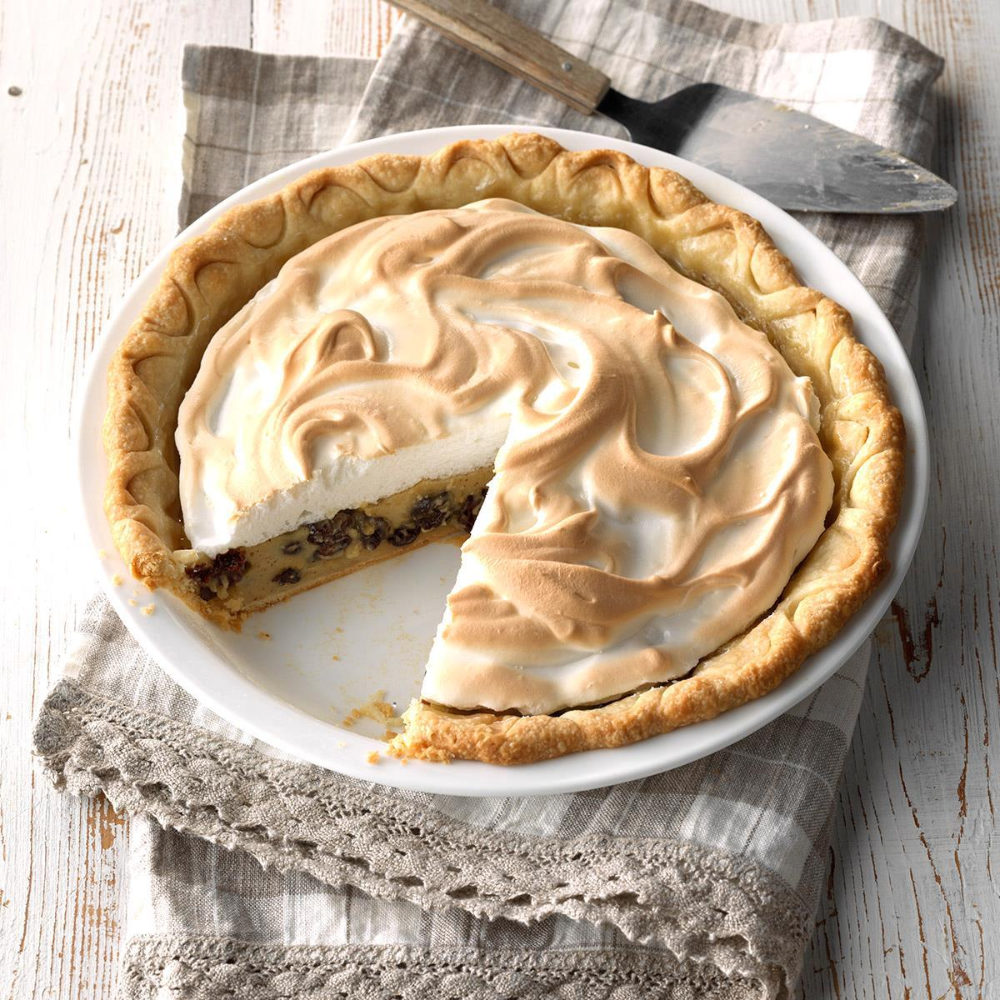

Back to Table of Content
GRANDMA RECEPES
Grandma’s Sour Cream Raisin Pie

Ingredients
- 1/2cup raises
- 1/3cup sugar
- 3 tablespoons cornstarch
- 1/8 teaspoon salt
- 1/8 teaspoon ground cloves
- 1 cup sour cream
- 3 large egg yolks, room temperature
- 1/2cup chopped nuts, optional
Preparation
- In a small saucepan, place raisins and enough water to cover; bring to a boil. Remove from the heat; set aside.
- In a large saucepan, combine the sugar , cornstarch , salt , cloves and cinnamon. Stir in sour cream andmilk until smooth. Cook and stir over medium-high heat until thickened and bubbly. Reduce heat to low; cook and stir for 2 minutes longer. Remove from the heat. Stir a small amount of hot filling into egg yolks; return all to the pan, stirring constantly. Bring to a gentle boil; cook and stir for 2 minutes. Remove from the heat.
- Drain raisins, reserving 1/2 cup liquid. Gently stir liquid into filling. Add raisins, and nuts if desired. Pour into pie shell.
- For meringue, in a small bowl, beat egg whites and salt on medium speed until soft peaks form. Gradually beat in sugar, 1 tablespoon at a time, on high until stiff peaks form. Spread over hot filling, sealing edge to crust.
- Bake at 350° for 15 minutes or until golden brown. Cool on a wire rack for 1 hour; refrigerate for 1-2 hours before serving. Refrigerate leftovers.